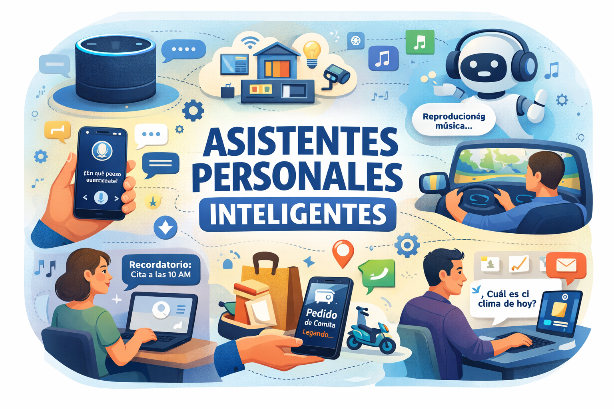
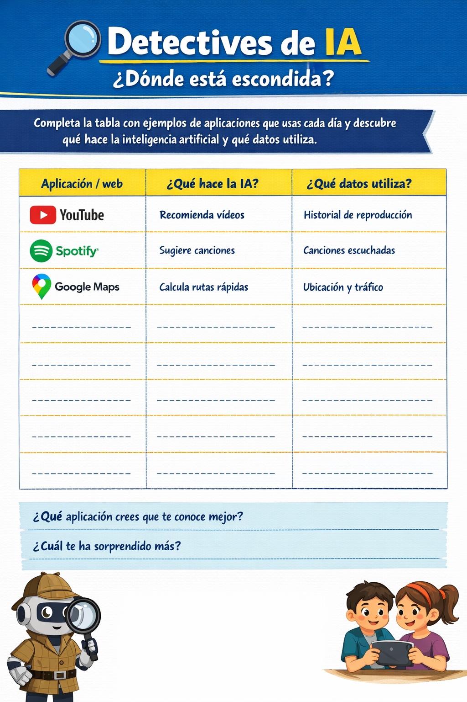

¿Qué es un asistente personal inteligente?
 |
Los asistentes personales son una de las aplicaciones más visibles de la inteligencia artificial en nuestra vida diaria. Están presentes en muchos dispositivos y servicios que usamos cada día, ayudándonos a resolver tareas de forma rápida mediante instrucciones de voz, texto o acciones automatizadas. Hoy en día, un asistente inteligente puede: - Responder preguntas en lenguaje natural. - Organizar recordatorios y alarmas. También usamos sistemas similares cuando navegamos con Google Maps, ya que interpreta nuestra ubicación, calcula rutas y adapta recomendaciones en tiempo real. |
Detectives de IA: ¿Dónde está escondida?
Cada día utilizamos muchas aplicaciones digitales sin pensar en toda la tecnología que funciona detrás de ellas. Plataformas de vídeo, música, mapas o redes sociales usan inteligencia artificial para analizar nuestros hábitos, anticipar decisiones y ofrecernos contenidos personalizados.
En esta actividad vas a convertirte en detective digital: tendrás que observar aplicaciones que utilizas habitualmente y descubrir qué función realiza la inteligencia artificial en cada una de ellas y qué tipo de datos necesita para funcionar.
No se trata solo de decir si una aplicación usa IA, sino de comprender cómo aprende del comportamiento de las personas y qué información recoge para ofrecer resultados cada vez más ajustados.
A partir de algunos ejemplos ya completados, tendrás que investigar nuevos casos y completar la tabla con tus propias observaciones.

👉 Al terminar, reflexiona: ¿Qué aplicación crees que sabe más sobre ti?